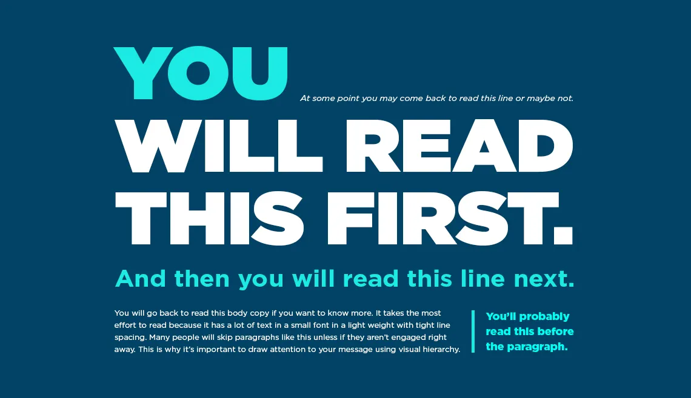

Typography can make or break the success of a site or app. It's a cornerstone of UX design; more than 90% of online information is in text form. But the design discipline of typography is so much more than choosing an attractive font for your website or app. There are a number of elements to consider when practicing typography. Here is a list of terms and a set of typography principles that will help you to become more proficient in this discipline so that you can create user-friendly designs.
Table of contents
- But first, what exactly is Typography?
- Typography Terms
- Typography Principles
- Take Away
- References & Where To Learn More
But first, what exactly is Typography?
Typography is a design discipline that involves the use of typefaces and the organization of those typefaces to create readable, usable and ideally, user-friendly interfaces or experiences. Effective typography enhances UX, optimizes usability, catches users' attention and has the potential to increase conversion rates.
There is some confusion around typographic terminology, so we've compiled the following list of terms to provide some clarity. This is not an exhaustive list, but this specific collection of terms is particularly relevant to you, as a UX designer.
Typography Terms
- Typeface: Also known as a font family, the word “typeface” comes from physical print and refers to the faces of physical letter blocks. A typeface is composed of fonts—much like an album is composed of tracks or a book is composed of chapters. A typeface includes multiple font weights, and its style is shared across all characters, numbers and symbols. Arial, Times New Roman and, yes, even Comic Sans are all typefaces.
- Font: Fonts are specific weights within a typeface. You choose a typeface; you use a font. If you were to select Georgia as your typeface, then Georgia bold, italic and regular would be your fonts. In other words, a font is the distinct, stylized characteristics found within a typeface. You'll likely use 2-3 fonts per project, and they'll be the foundation of your typography and a key element of your overall design.
- Character: an individual element, most commonly a single letter, number or punctuation mark.
- Baseline: the invisible line on which all letters rest. You can create a grid using the baseline of your chosen type to create a harmonious layout. Find out more about grid systems here.
- x-height: the distance between the baseline and the height of the lowercase letter “x”. If you are working with a font that has an unusually large (or small) x-height, it could impact the entire interface—sometimes even breaking the layout.
- Stroke: a straight or curved line that creates the principal part of a letter.
- Serif: the stroke, or foot-like element, connected to the end of some typefaces' main strokes. Serif fonts are often more readable, as the tiny “feet” guide the readers' eyes to the next character. However, due to their tiny size, they may not always render well on screens.
- Sans serif: a typeface without strokes or any extra elements at the bottom of a letter. Owing to the lower resolution of screens, sans serifs are often preferred for digital interfaces. As technology improves and screens come equipped with better resolutions, this may no longer be a deciding factor in choosing a font.
- Weight, height, and size: This refers to the thickness, length and overall size of a typeface. You can experiment with different weights and sizes and use the variations judiciously on your interface to break the monotony on long passages of text, or to direct attention to specific elements.
- Ascender and descender: the vertical stroke that extends upward beyond the x-height and downward beyond the baseline, respectively.
- Letter spacing (or tracking): the distance between the widest point of each character. Tracking specifically refers to the uniform increase or decrease in the horizontal space between characters.
- White space: also known as negative space, is the area between elements in a design composition. If the white space is not balanced, copy will be hard to read.
- Alignment: refers to how text is positioned. There are 4 main alignments: left, right, centered and justified. Alignment helps designers to create a coherent composition.
- Hierarchy: the principle of arranging elements according to importance. Creating a strong hierarchy is paramount to helping users identify where to look first. No matter the screen size, if an interface has multiple elements, it is important to guide the user towards the most important elements of the screen. Your choice of font, its weight, size, letter spacing, alignment and surrounding white space, along with other visual design elements, work together to create this hierarchy.
Typography Principles
Here are some typography guidelines to keep in mind when designing your website or app for optimal user-friendliness. It's by no means an exhaustive list, but it provides a good starting point in your burgeoning typography practice.
- Too many typefaces hinder good user experience
- Choose typefaces that compliment and contrast with one another
- Keep readability, legibility, and accessibility top of mind
- Great visual hierarchy improves UX
- Make your typography scalable
- Enrich UX with typography
- Test and learn
Keep it simple! Too many typefaces can look sloppy and lead to confusion. It's best to stick to between two and three typefaces in design. Using multiple typefaces also adds to the size and loading time of applications. For optimizing the experience, use fonts that are likely to be available/installed at the users' end.
Your typefaces shouldn't be too similar; otherwise, their nuances will be lost. Create contrast by choosing one serif and one sans serif font.

The text your typography creates needs to be understandable; otherwise, it defeats the purpose of communicating information through text. Consider your user, their environment and the medium with which they’re engaging with your product. Color and contrast can make or break accessibility; pale yellow text placed on an orange background is going to be more difficult to read than the same yellow text on a navy-blue background.
The prevalence of “dark mode” is a good example with which to illustrate the importance of accessibility—it reduces the discomfort of looking at a bright screen and improves overall legibility (the characters and words of your text are recognizable and easy to comprehend) and readability (your text is easy to follow, overly-complex words and overwrought sentence structures are avoided). Some studies suggest that serifs are not as accessible as sans-serifs, particularly for dyslexic users. The research, however, is inconclusive. To make sure your designs are accessible, always test them with real users.
Type hierarchy for your app/site is crucial as it allows your users to quickly scan through information. Organize your content according to priority; the most important must be the most prominent and the least important should be smaller and unobtrusive. Size, weight and color are effective ways of creating visual hierarchy.
When you're designing a page, you should begin with an, and each type style that follows should be beneath, from and beyond. As an added bonus, an effective hierarchy also improves SEO.
Create visual hierarchy through typography:

In your design work, you will be asked to create a website or app that works on both desktop and mobile. So, it's important to design your typography in a way that considers the user's experience on both platforms. You want your typography to scale well, no matter the screen size. Define a scale for your font and typefaces at the beginning of the design process. Remember, your scale guidelines should include different operating systems, as well as different platforms.
Typography is part of the overall visual language you use to communicate with your users. Just like the visual elements of color, form and pattern, typography can set a mood, set a tone and present a product the way you want it perceived.
The New York Times uses calligraphy for its logo and a serif font for its headlines, evoking a classic, hard copy newspaper.
Khruangbin is a unique band, crossing genres of classic rock, funk, soul and psychedelia. Their website's design, the colors, typography and illustrations all add to their retro, funky and unique style.
Successful typography can make a statement and set a mood.
As with any stage of the design process, it's vital to test and learn. Try out different typefaces and fonts, see how they work with one another and scale from one platform to the next. A nifty trick to test out a typeface is with the phrase “the quick brown fox jumps over the lazy dog” as it contains all the letters from the English alphabet. It's possible that your app or website may be translated into another language, so it's important to test for that outcome. You want to ensure that your typography design still works with diacritics (the accents or marks above, below or next to letters that indicate a particular pronunciation or emphasis) or different scripts. Through testing and learning, you can make the experience seamless for everyone!
Take Away
Typography can seem an obscure part of design, but it's fundamental to creating a positive user experience. By familiarizing yourself with basic terms and principles of typography, you can transform the success of your designs. Simplicity is your friend; don't overcomplicate your life (or design) by trying to do too much with type. Ultimately, you want your typography to be readable, accessible and understandable. Words are important, and so is how they look. So, the better your typography, the better your user experience.
References & Where To Learn More
Learn more about typography and other elements of visual design from our course Visual Design: The Ultimate Guide.
- Discover more typography terminology and learn about the anatomy of type.
- Dig deeper into typography in UI design with some free online resources by Adobe XD, Shopify, and Protoypr.
- Explore more best practices of typography with Mockplus.